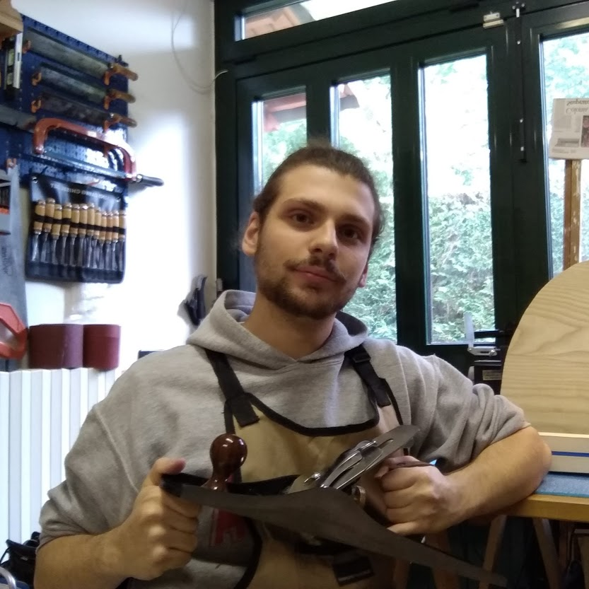

Rizzo Guitars nasce come laboratorio "aperto al pubblico" nel 2019, ma la passione per la liuteria e la lavorazione del legno ce l'ho ormai da molti anni. Mi sono avvicinato a questa realtà da giovane, quando da chitarrista appena adolescente scoprii il laboratorio di Bruno Barnes a Monselice. Chi è della zona, conoscerà certamente questo nome molto bene. Con il tempo ho cominciato a perdere interesse nel suonare ed ho cominciato ad effettuare i primi lavori di set-up, per necessità, sui miei strumenti, e occasionalmente su quelli di alcuni tra i miei più cari amici. Da lì a qualche anno avrei rispolverato i vecchi attrezzi da falegname di mio padre per costruire la mia prima chitarra elettrica. In questi anni da liutaio mi sono "specializzato" nella costruzione, riparazione, personalizzazione e messa a punto di chitarre e bassi elettrici; Tuttavia, effettuo anche interventi su strumenti classici ed acustici. Inoltre, per via dell'epidemia di COVID-19 ho cominciato a studiare e a costruire chitarre acustiche archtop basate sui modelli Gibson anni '30, e Benedetto.
Ogni mio strumento è per lo più fatto interamente a mano, con il minimo impiego di elettroutensili possibile. Questo non rende i miei strumenti automaticamente “perfetti”, né li fa suonare “meglio”. L’utilizzo di lavorazioni manuali mi permette però di costruire strumenti a ritmi più lenti che si sposano bene con il mondo della liuteria: quando bisogna incollare le due parti di un piano armonico, la loro giunzione deve essere perfetta, qualunque altra approssimazione non è sufficiente. Lavorare con attrezzi manuali mi permette di raggiungere questo traguardo in maniera più controllata e precisa.
Da quando ho cominciato a costruire i miei primi strumenti, ho sempre avuto un'idea ben fissa in testa: scegliere ed utilizzare solo materia prima locale. Perché una decisione tanto drastica? Il legno è una materia prima molto particolare: è viva. A differenza dei metalli, due assi di legno della stessa specie possono essere molto diverse in termini di venatura, densità e lavorabilità. Per questo quando costruisco uno strumento voglio essere sicuro che il materiale che sto utilizzando sia della migliore qualità possibile, e questo si può fare solo andando di persona a comprare tavolame grezzo, in modo da selezionare fin dal primo momento il materiale più adatto alla costruzione di strumenti musicali.